嘉明湖
嘉明湖位於台東的利稻村,據說形成於冰河時期,屬於冰川侵蝕後留下的低窪地形。嘉明湖還有其他別稱,像是「天使的眼淚」、「蛋池」,同時也是台灣第二高的高山湖泊。在布農族的傳說中,古時候有兩顆太陽,其中一顆被箭射傷,變成了月亮。每晚,月亮都會透過嘉明湖照映自己的傷口;也因此,在布農語中,嘉明湖被稱為「月亮的鏡子」。
行程
| 日期 | 路線 |
|---|---|
| 第一天 | 池上車站 → 向陽遊樂區 → 向陽山屋 |
| 第二天 | 向陽山屋 → 嘉明湖山屋 → 嘉明湖 → 三叉山 → 嘉明湖山屋 |
| 第三天 | 嘉明湖山屋 → 向陽山 → 向陽山屋 → 關山車站 |
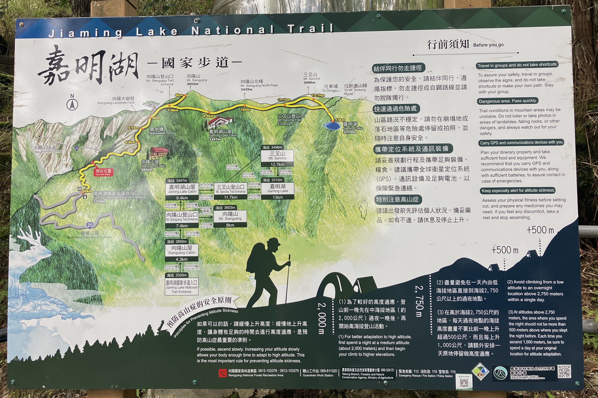
第一天
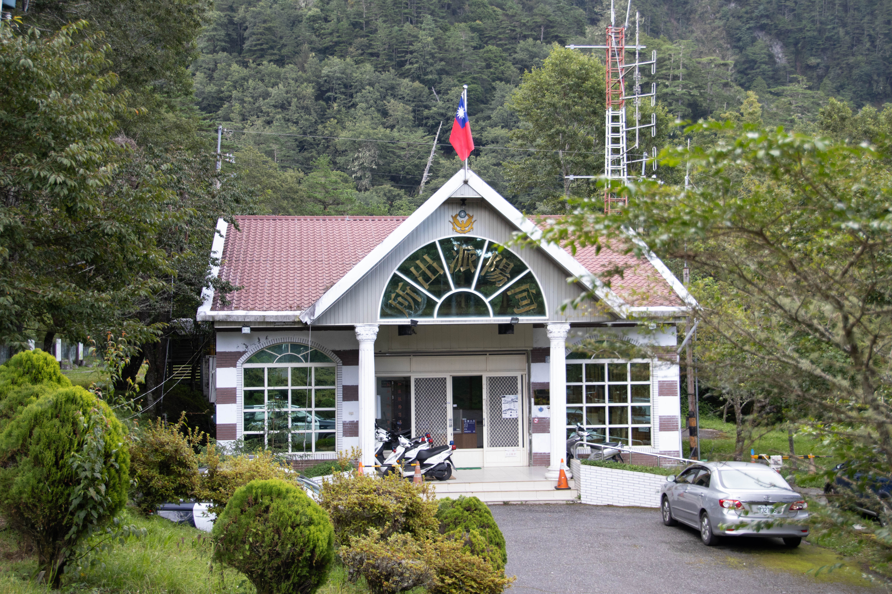
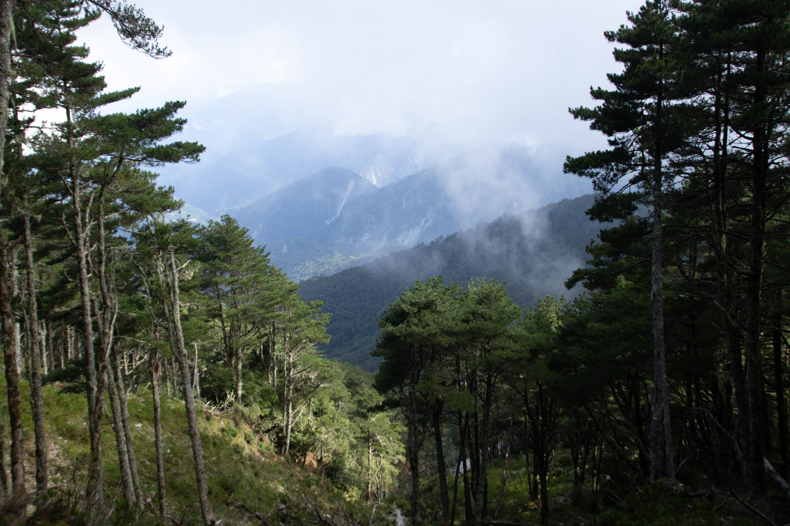


第二天
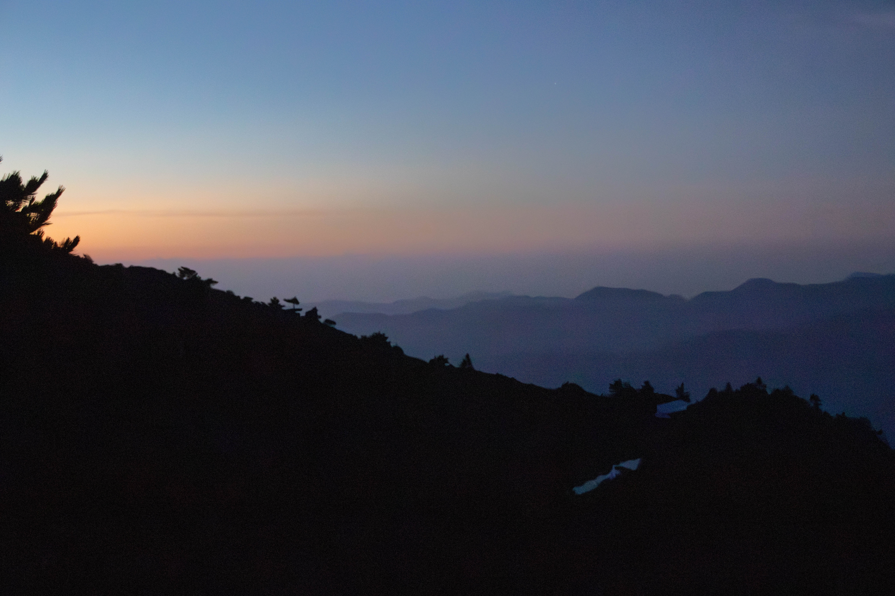
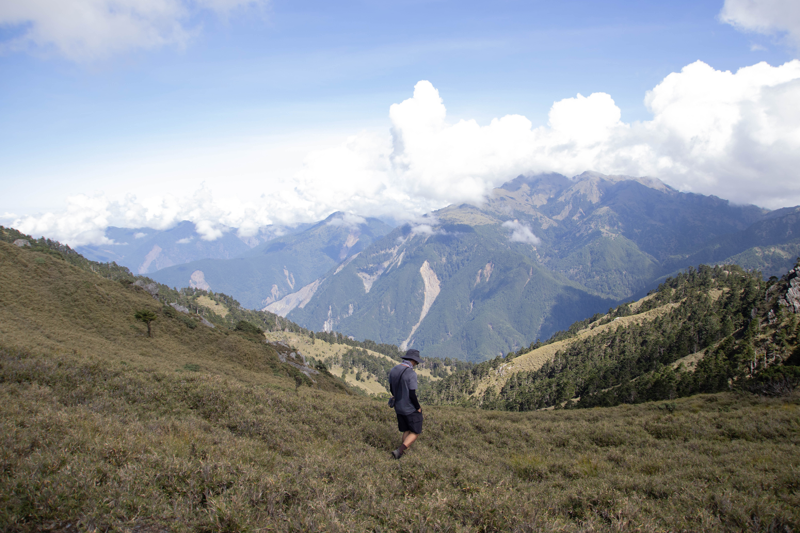
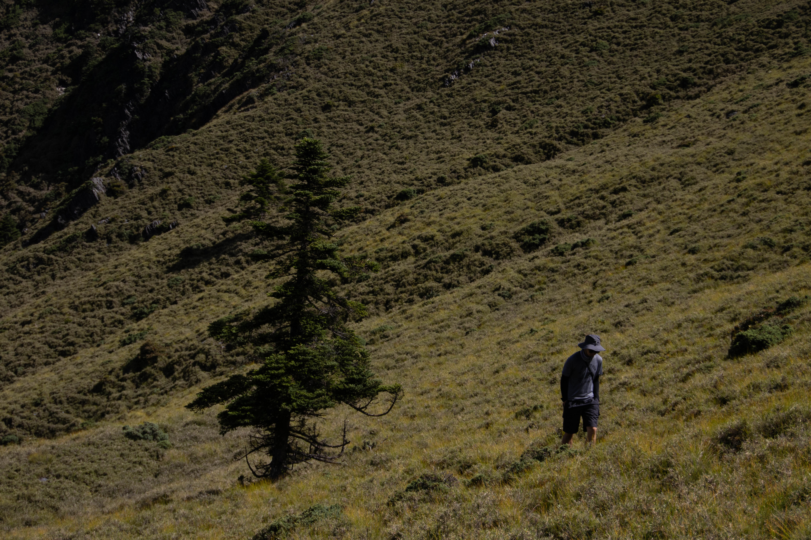
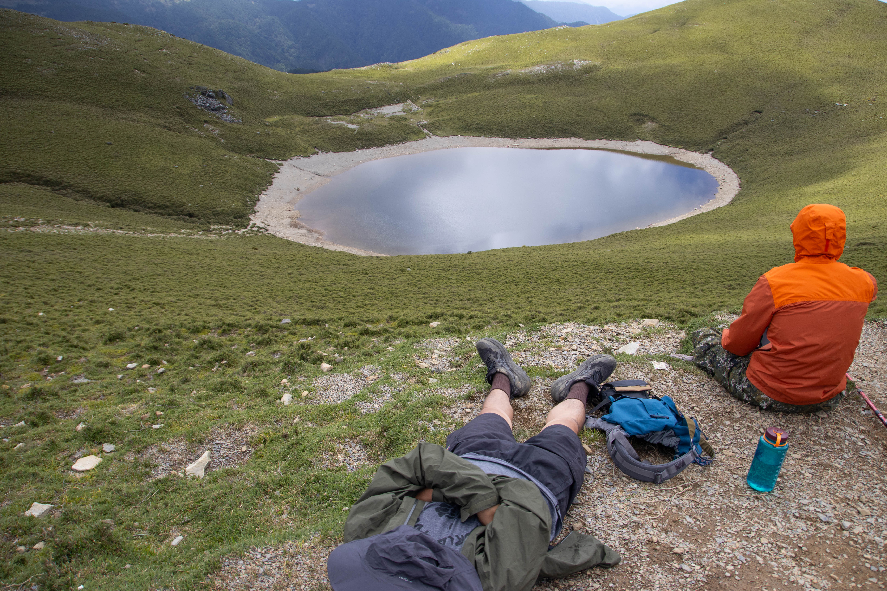
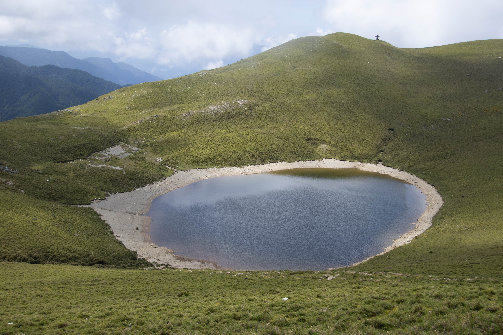
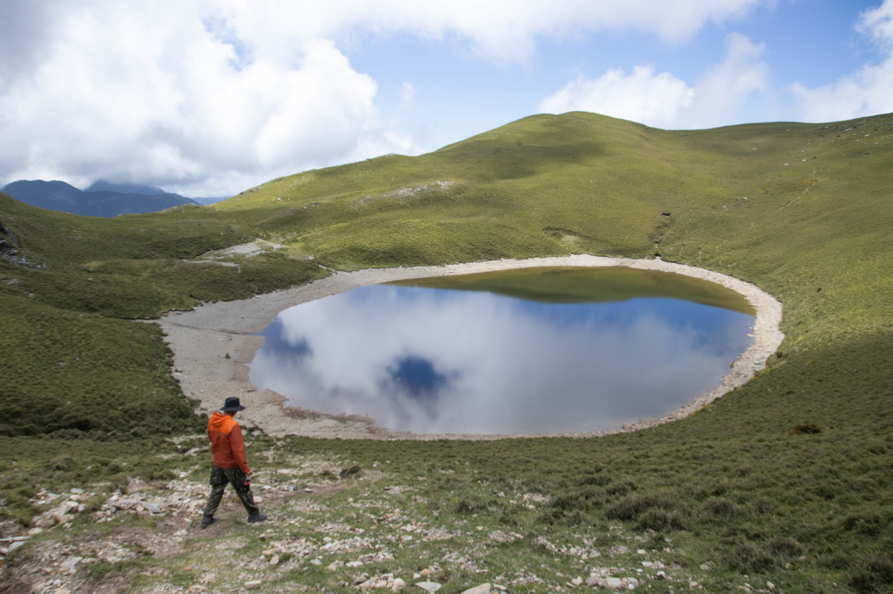
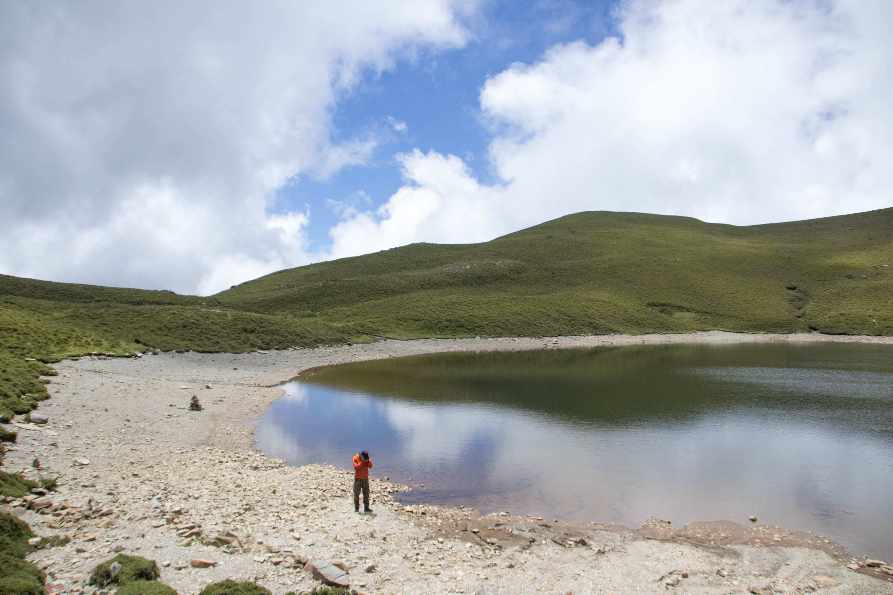
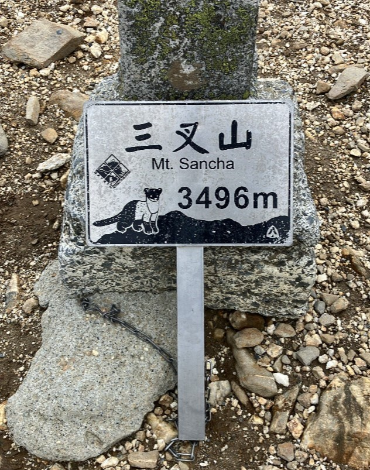
第三天
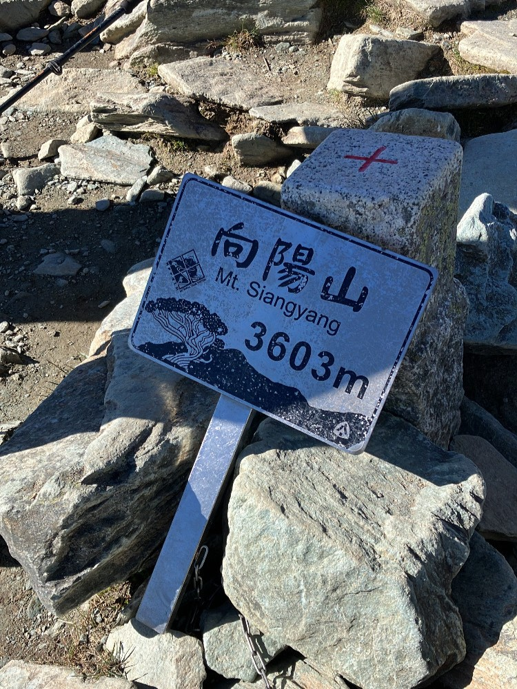
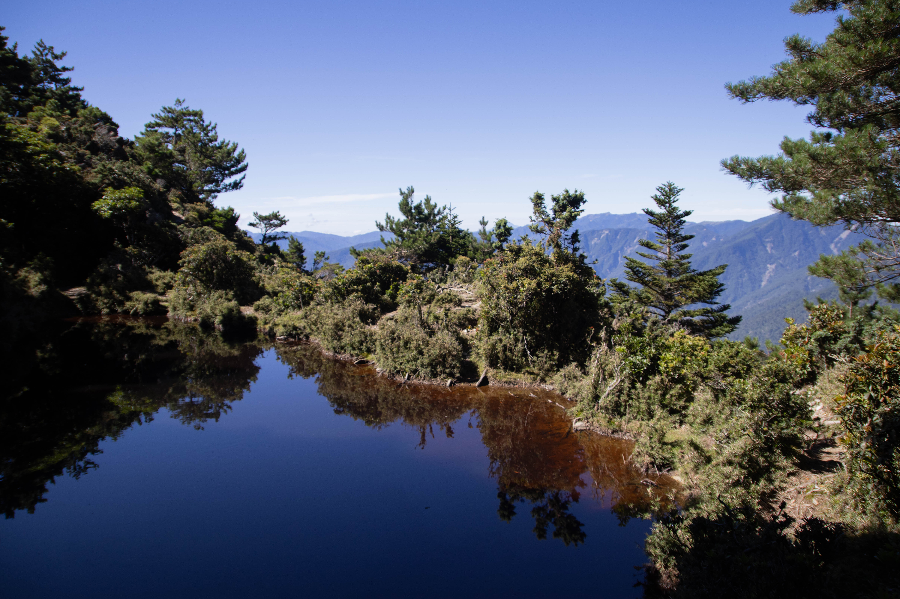
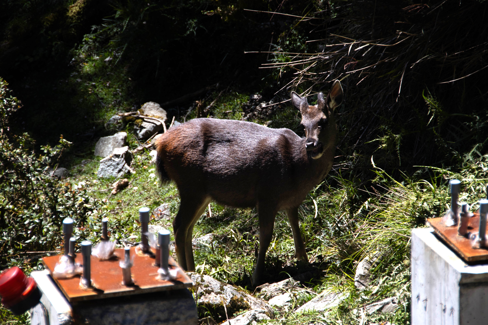